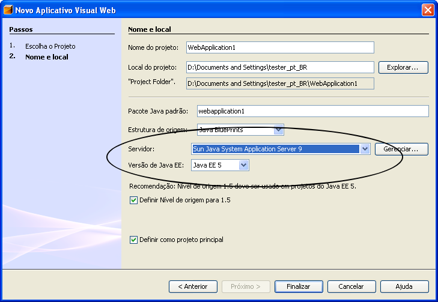

Guia de instalação do NetBeans 5.5 Visual Web Pack
Instruções de instalação do NetBeans Visual Web Pack 5.5
O NetBeans Visual Web Pack 5.5 fornece um ambiente para a construção rápida de aplicativos da Web com componentes JavaServer Faces ativados para AJAX, suporte à vinculação de arrastar e soltar para fontes de dados, e muito mais.
O Visual Web Pack funciona com todos os servidores de aplicativos e recipientes de servlet aceitos pelo NetBeans IDE.
Restrições do Java EE 5/JavaServer Faces 1.2
A partir desta data, somente o Sun Java System Application Server 9 U1 (compilação 14), ou superior, aceita aplicativos do Visual Web que usam a plataforma Java EE 5. Se você usa um servidor diferente, escolha a plataforma J2EE 1.4 ao criar o seu projeto.
Banco de dados Viagem fornecido
Muitos tutoriais e aplicativos de amostra usam o banco de dados Viagem. Se disponibilizar o servidor de aplicativos Sun Java System para o IDE antes de instalar o Visual Web Pack,
a instalação do Visual Web Pack adicionará um banco de dados Viagem ao servidor Java DB (Derby) que é fornecido com o servidor de aplicativos Sun Java System.
Se disponibilizar o servidor de aplicativos Sun Java System para o IDE depois de instalar o Visual Web Pack, reinicie o IDE para ativar o banco de dados Viagem. Para obter instruções sobre a instalação do banco de dados Viagem em sua própria instalação do servidor de banco de dados Java DB ou Apache Derby, consulte Banco de dados de amostra do Visual Web Pack na seção Informações de configuração.
Visualização da tecnologia
Caso você tenha instalado a versão Visualização da tecnologia do NetBeans Visual Web Pack 5.5, desinstale-a, conforme descrito em Desinstalando o software, antes de instalar a versão de produção do Visual Web Pack.
Caso você tenha instalado os componentes Blueprints Ajax na Visualização da tecnologia do NetBeans Visual Web Pack 5.5, desinstale esses componentes manualmente antes de instalar a versão de produção do Visual Web Pack. Para excluir uma biblioteca de componentes do IDE:
Escolha Ferramentas > Gerenciador de bibliotecas de componentes.
No Gerenciador de bibliotecas de componentes, selecione a biblioteca que deseja excluir e clique no botão Remover na parte inferior da janela.
Talvez você veja uma mensagem dizendo que há projetos abertos que usam a biblioteca. Se for o caso, clique em OK na mensagem, feche o Gerenciador de bibliotecas de componentes e, em seguida, feche esses projetos. Você poderá, então, reabrir o Gerenciador de bibliotecas de componentes e começar novamente.
Confirme que deseja excluir a biblioteca.
A biblioteca é removida do seu diretório de usuário. Quaisquer projetos que usam a biblioteca podem continuar a fazê-lo porque possuem a sua própria cópia da biblioteca no diretório do projeto.
Se não tiver o JDK 5.0 atualização 6 ou superior instalado, não é possível prosseguir com a instalação. Você pode fazer o download deste JDK na página de downloads do Java SE.
Observe que as instalações do Mac OS X requerem o Java 2 Standard Edition (J2SE) 5.0 versão 4. Você pode fazer o download deste JDK da página de downloads da Apple. Procure "J2SE" para localizar essa versão.
Um dos servidores de aplicativos ou recipientes de servlet que são aceitos pelo Netbeans IDE.
Observação: Para desenvolver aplicativos do Visual Web usando a plataforma Java EE 5, você deve usar o servidor de aplicativos Sun Java System 9. Para obter mais informações, consulte o site na Web de downloads do Java EE.
Ordem de instalação
Se estiver instalando o NetBeans Visual Web Pack com o NetBeans IDE e a instalação separada do servidor de aplicativos Sun Java System, é melhor configurar o servidor de aplicativos antes de instalar o Visual Web Pack, para que o banco de dados Viagem fornecido esteja imediatamente disponível. Se configurar o servidor de aplicativos depois de instalar o Visual Web Pack, reinicie o IDE antes que o banco de dados Viagem esteja disponível na janela Tempo de execução.
Aplicativos firewall
Os aplicativos firewall ativados podem impedir que alguns componentes sejam configurados corretamente durante o processo de instalação. Dependendo do firewall, talvez você tenha que desativá-lo antes da instalação. Consulte a documentação do seu firewall.
Observação: Caso você tenha instalado o servidor de aplicativos Sun Java System, configure o servidor de aplicativos no NetBeans IDE, conforme descrito em Configuração do servidor de aplicativos antes de instalar o Visual Web Pack, para que o instalador possa instalar o esquema Viagem de amostra no banco de dados Java DB fornecido do servidor. Observe que o Visual Web Pack não requer um servidor de aplicativos, mas você implanta os projetos do Visual Web Pack em um servidor de aplicativos.
Importante: Caso você tenha instalado a versão Visualização da tecnologia do NetBeans Visual Web Pack 5.5, desinstale-a, conforme descrito em Desinstalando o software, antes de instalar a versão de produção do Visual Web Pack.
Microsoft Windows
A seguir encontram-se as instruções para a instalação do NetBeans Visual Web Pack 5.5 na plataforma Microsoft Windows.
Antes de começar
A instalação na plataforma Microsoft Windows apresenta as seguintes restrições:
O instalador extrai os arquivos necessários para o diretório temporário padrão definido pela variável de ambiente TEMP. Se a quantidade de espaço em disco no diretório temporário for menor que o necessário, a instalação poderá falhar ou prosseguir de forma incorreta.
Se tiver este problema, você pode aumentar o espaço alocado da variável de ambiente TEMP ou especificar outro diretório temporário com espaço suficiente. Para especificar um diretório temporário para a instalação, digite os seguintes comandos:
> cd local-do-instalador > netbeans-visualweb-5_5-windows.exe -is:tempdir diretório-temporário
Para instalar
Depois de fazer o download do arquivo de instalação netbeans-visualweb-5_5-windows.exe, clique duas vezes no ícone do instalador para iniciá-lo.
Na página de boas-vindas do assistente para instalação, clique em Próximo.
Aceite o contrato de licença e clique em Próximo.
Na página do diretório de instalação do assistente para instalação, especifique o local de instalação do NetBeans IDE 5.5.
O assistente para instalação procura as instalações compatíveis do JDK. Se o JDK não estiver no local padrão, você precisará especificar o local do Java JDK 1.5.0_06 ou superior. Você também pode digitar o caminho de outro JDK instalado ou usar o botão Explorar para ir até outra instalação e selecioná-la.
Quando a instalação estiver concluída, clique em Finalizar para sair do assistente.
O diretório de projeto padrão é C:\Documentos e configurações\nome de usuário. Se você desinstalar o NetBeans Visual Web Pack, este diretório não será excluído, e será identificado da próxima vez que você instalar o Visual Web Pack.
Observação: Se você encontrar problemas durante a instalação do software, consulte Solução de problemas para obter descrições completas e soluções sugeridas para problemas não resolvidos que poderiam afetar a instalação.
A seguir encontram-se as instruções para a instalação do NetBeans Visual Web Pack 5.5 nas plataformas Solaris e Linux.
Nas instruções abaixo, substitua seu_executável_binário por um dos seguintes:
Solaris OS, SPARC: netbeans-visualweb-5_5-solaris-sparc.bin
Solaris OS, x86/x64 Platform Edition: netbeans-visualweb-5_5-solaris-x86.bin
Linux: netbeans-visualweb-5_5-linux.bin
Para instalar
Depois de fazer o download do arquivo de instalação, seu_executável_binário, navegue até a pasta que contém este arquivo.
Se necessário, altere as permissões no arquivo de instalação para tornar o binário executável, digitando o seguinte comando em um prompt de comando:
$ chmod +x seu_executável_binário
Inicie o instalador, digitando o seguinte comando em um prompt de comando:
$ ./seu_executável_binário
Na página de boas-vindas do assistente para instalação, clique em Próximo.
Aceite o contrato de licença e clique em Próximo.
Na página do diretório de instalação do assistente para instalação, aceite o diretório do NetBeans IDE encontrado pelo assistente ou selecione uma instalação diferente do IDE.
Verifique se o local de instalação está correto e se há espaço disponível no sistema para a instalação. Para determinar a quantidade de espaço em disco livre, execute o seguinte comando:
df -k
Clique em Instalar para iniciar a instalação.
Quando a instalação estiver concluída, clique em Finalizar para sair do assistente.
O diretório de projetos padrão é $HOME/. Se você desinstalar o NetBeans Visual Web Pack, este diretório não será excluído, e será identificado da próxima vez que você instalar o Visual Web Pack.
Observação: Se você encontrar problemas durante a instalação do software, consulte Solução de problemas para obter descrições completas e soluções sugeridas para problemas não resolvidos que poderiam afetar a instalação.
A seguir encontram-se as instruções para a instalação do NetBeans Visual Web Pack 5.5 na plataforma Macintosh OS X.
Observe que para o Macintosh OS, o JDK necessário é o Java 2 Standard Edition (J2SE) 5.0 versão 4. Você pode fazer o download deste JDK na página de downloads da Apple. Procure "J2SE" para localizar essa versão.
Antes de começar
A instalação na plataforma Mac OS X apresenta as seguintes restrições:
Para garantir a correta operação do instalador e do desinstalador, você deve configurar o Java para que use o JDK 5.0:
Na janela Localizador, vá para Aplicativos > Utilitários > Java > J2SE5.0 e abra o utilitário Preferências de Java.
Na seção Configurações em tempo de execução do aplicativo Java, mova o J2SE5.0 para a parte superior da lista.
Para permitir que o sistema operacional reconheça corretamente os componentes fornecidos com o NetBeans 5.5 IDE, o diretório de instalação deve terminar com a seqüência .app.
Para instalar
Clique duas vezes no ícone do instalador na janela de download para iniciar o instalador.
Na página de boas-vindas do assistente para instalação, clique em Próximo.
Aceite o contrato de licença e clique em Próximo.
Na página do diretório de instalação do assistente para instalação, aceite o diretório do NetBeans IDE encontrado pelo assistente ou selecione uma instalação diferente do IDE.
Verifique se o local de instalação está correto e se há espaço disponível no sistema para a instalação. Para determinar a quantidade de espaço em disco livre, execute o seguinte comando:
df -b
Clique em Instalar para iniciar a instalação.
Quando a instalação estiver concluída, clique em Finalizar para sair do assistente.
O diretório de projetos padrão é $nome_de_usuário/. Se você desinstalar o NetBeans Visual Web Pack, este diretório não será excluído, e será identificado da próxima vez que você instalar o Visual Web Pack.
Observação: Se você encontrar problemas durante a instalação do software, consulte Solução de problemas para obter descrições completas e soluções sugeridas para problemas não resolvidos que poderiam afetar a instalação.
Atualizando o NetBeans Visual Web Pack 5.5 da Visualização da tecnologia para a Versão de produção
Para atualizar a instalação do Visual Web Pack, você deve desinstalar quaisquer componentes BluePrints AJAX instalados e também a Visualização da tecnologia do Visual Web Pack antes de instalar a Versão de produção.
Para desinstalar os componentes BluePrints AJAX:
No menu principal, selecione Ferramentas > Gerenciador de módulos.
No Gerenciador de módulos, expanda o módulo Visual Web e selecione BluePrints AJAX Components Technology Preview v. 0.1.1.
Este tópico fornece informações sobre como disponibilizar o servidor de aplicativos Sun para o IDE, como acessar o banco de dados Viagem de amostra, que é usado por alguns aplicativos e tutoriais de amostra, e como configurar um projeto do Visual Web.
Configuração do servidor de aplicativos Sun Java System
Se tiver instalado o NetBeans IDE fornecido com o servidor de aplicativos Sun Java System, o servidor de aplicativos já estará registrado no IDE e você não precisará configurá-lo. Se fez o download e instalou o servidor de aplicativos Sun Java System separadamente, configure o IDE para disponibilizar o servidor no IDE. É melhor configurar o servidor antes de instalar o Visual Web Pack.
Para configurar uma instalação separada do servidor:
Depois de instalar o NetBeans IDE e o servidor de aplicativos Sun Java System, inicie o IDE.
Na janela Tempo de execução, clique com o botão direito do mouse no nó Servidores e escolha Adicionar servidor no menu pop-up.
No assistente para Adicionar instância de servidor, selecione Servidor de aplicativos Sun Java System na lista suspensa, e clique em Próximo.
Insira o local da instalação do servidor de aplicativos e clique em Próximo.
Os valores de nome de usuário e senha padrão do domínio do servidor de aplicativos padrão, domain1, são:
nome de usuário: admin
senha: adminadmin
Observe que se você especificar uma senha aqui, ela será armazenada em seu diretório de usuário, um possível risco de segurança. Se não especificar a senha aqui, você será solicitado a fornecer os valores quando necessário.
Clique em Finalizar.
Banco de dados de amostra do Visual Web Pack
Quando você instala o Visual Web Pack, o processo de instalação disponibiliza um banco de dados Viagem de amostra para o banco de dados Java DB que é fornecido com o servidor de aplicativos Sun Java System, conforme mostrado na tabela abaixo. Alguns aplicativos e tutoriais de amostra requerem o banco de dados Viagem. Se o IDE estiver configurado para usar o servidor de aplicativos Sun Java System antes que o Visual Web Pack seja instalado, o banco de dados Viagem estará disponível na janela Tempo de execução. Se disponibilizar o servidor de aplicativos Sun Java System para o IDE depois de instalar o Visual Web Pack, reinicie o IDE antes que o banco de dados Viagem apareça na janela Tempo de execução.
Banco de dados de amostra
Detalhes da conexão
Necessário para
Viagem
URL do DB: jdbc:derby://localhost:1527/travel Driver: org.apache.derby.jdbc.ClientDriver Nome de usuário: viagem Senha: viagem
Alguns tutoriais e aplicativos de amostra
Observação: Para usar o banco de dados Viagem em um servidor diferente do servidor de aplicativos Sun Java System, você deve disponibilizar o arquivo derbyclient.jar para o servidor, conforme descrito na seção seguinte.
Se não quiser instalar o servidor de aplicativos Sun Java System, complete as etapas seguintes para disponibilizar o banco de dados Viagem para o IDE.
Faça o download e instale o banco de dados Java DB ou o banco de dados Apache Derby.
Complete as etapas seguintes para disponibilizar o banco de dados para o IDE:
Escolha Opções no menu Ferramentas.
Clique em Opções avançadas.
Expanda Configurações de servidores e ferramentas externas, e selecione Banco de dados Java DB.
Defina o Local do Java DB para a pasta na qual você instalou o servidor de banco de dados.
Defina o Local do banco de dados para a pasta em que você armazena os bancos de dados.
Clique em Fechar.
Se ainda não iniciou o servidor de banco de dados, escolha Ferramentas > Banco de dados Java DB > Iniciar servidor Java DB.
Na janela Tempo de execução, clique com o botão direito do mouse em Bancos de dados e escolha Nova conexão no menu pop-up para abrir a caixa de diálogo Nova conexão de banco de dados.
Escolha Java DB (Rede) na lista suspensa Nome.
Na caixa de texto de URL do banco de dados, digite jdbc:derby://localhost:1527/travel;create=true;.
Defina o Nome de usuário como viagem, defina a Senha como viagem, e clique em OK.
Quando a conexão tiver sido estabelecida, clique em OK para fechar a caixa de diálogo.
Um novo nó da conexão é exibido. Clique com o botão direito do mouse no nó e escolha Desconectar no menu pop-up.
Você já não precisa da conexão para criar o banco de dados. Clique com o botão direito do mouse no nó e escolha Excluir no menu pop-up.
Clique com o botão direito do mouse em Bancos de dados e escolha Nova conexão no menu pop-up para abrir a caixa de diálogo Nova conexão de banco de dados.
Escolha Java DB (Rede) na lista suspensa Nome.
Na caixa de texto do URL do banco de dados, digite jdbc:derby://localhost:1527/travel.
Defina a Senha como viagem e clique em OK.
Quando a conexão tiver sido estabelecida, clique em OK para fechar a caixa de diálogo.
Você usará este nó a partir de agora para conectar-se ao banco de dados Viagem.
Clique com o botão direito do mouse no nó da conexão e escolha Executar comando para abrir o editor de consultas Comando SQL.
No menu principal, escolha Arquivo > Abrir arquivo.
Navegue até $NetBeansInstallDir/rave2.0/startup/samples/create-Travel-derby.sql e selecione-o, em seguida, clique em Abrir.
Copie o conteúdo do arquivo create-Travel-derby.sql e cole-o no editor de consultas Comando SQL.
Clique em Executar SQL na barra de ferramentas de edição para criar e preencher as tabelas no banco de dados Viagem.
Feche o editor de consultas Comando SQL e crie o arquivo Travel-derby.sql.
Expanda o nó da conexão de banco de dados Viagem e exiba as tabelas.
Quando você cria um projeto do Visual Web, o assistente para Novo aplicativo do Visual Web permite definir o servidor e a versão do Java EE desse projeto, como mostrado na figura seguinte:

Figura 1: Assistente para Novo projeto
Se quiser usar os componentes do JavaServer Faces 1.2, defina a versão do Java EE como Java EE 5. O servidor de aplicativos Sun Java System 9 é no momento o único servidor testado que oferece suporte aos projetos Java EE 5. O tópico da ajuda on-line do Visual Web Pack, Assistente para Novo aplicativo do Visual Web, possui informações detalhadas sobre as configurações que podem ser usadas para criar um novo projeto.
A tabela seguinte é apresentada no início de cada tutorial do Visual Web Pack e mostra os recursos que funcionam com esse tutorial:
Servidor de aplicativos
Sun Java System Application Server 9 Tomcat JBoss BEA WebLogic
Componentes do JavaServer Faces/
Plataforma Java EE
1.2 com Java EE 5* 1.1 com J2EE 1.4
Banco de dados Viagem
Biblioteca de componentes BluePrints AJAX
Servidor de aplicativos: O tutorial funciona com os servidores da lista que possuem uma marca de seleção verde.
Componentes JavaServer Faces/Plataforma Java EE:
Ao escolher Java EE 5 como a plataforma, a Paleta de componentes contém os componentes JavaServer Faces 1.2. Ao escolher J2EE 1.4 como a plataforma, a Paleta de componentes contém os componentes do JavaServer Faces 1.1
Banco de dados Viagem: Se listado como Necessário, o banco de dados Viagem é necessário para a conclusão do tutorial. Para obter mais informações sobre o banco de dados Viagem, consulte a seção anterior intitulada Amostra do Visual Web Pack.
Para usar o banco de dados Viagem em um servidor diferente do servidor de aplicativos Sun Java System, você deve adicionar o arquivo derbyclient.jar ao seu projeto ou copiá-lo para o diretório da biblioteca do servidor. Por exemplo, se você quiser usar o banco de dados Viagem com Tomcat, copie o arquivo derbyclient.jar em $visualwebpack_install\enterprise3\apache-tomcat-5.5.17\common\lib.. Você pode encontrar uma cópia do arquivo derbyclient.jar em $glassfish_install\javadb\lib\derbyclient.jar.
Biblioteca de componentes BluePrints AJAX: Se listado como Necessário, o tutorial demonstra como usar os componentes que são fornecidos com a Biblioteca de componentes BluePrints AJAX. Consulte Fazendo download e importando componentes AJAX e outros componentes para obter detalhes.
Se tiver problemas ao instalar ou executar o software, consulte a lista de problemas abaixo para ver as soluções. Para obter uma lista completa dos problemas conhecidos, dos requisitos do sistema e de informações de configuração, consulte as Notas da versão.
Se encontrar um problema que não esteja listado nas notas da versão ou quiser solicitar uma melhoria, registre o problema no sistema de controle de erros do NetBeans, IssueZilla, em https://netbeans.org/issues. Para problemas do Visual Web Pack, selecione o componente "visualweb" e, em seguida, selecione um subcomponente apropriado. Se não tiver certeza do nome correto do subcomponente, escolha "outro".
Encontram-se abaixo os problemas não solucionados desta versão que podem afetar ou interromper o processo de instalação:
A instalação do Solaris é anulada com o erro "JRE não encontrado" embora o JRE tenha sido instalado e especificado.
Descrição: Este aplicativo requer uma implementação do Java Run Time Environment (JRE) para ser executado, mas o instalador não consegue encontrá-la em seu computador. Use a opção da linha de comando -is:javahome para especificar um JRE válido. Para obter mais ajuda, use a opção -is:help.
Solução: Inicie o instalador com o parâmetro de linha de comando -is:tempdir dir-temp-personalizado. Observe que dir-temp-personalizado deve ser um caminho absoluto, e deve conter pelo menos 1 GB de espaço em disco.